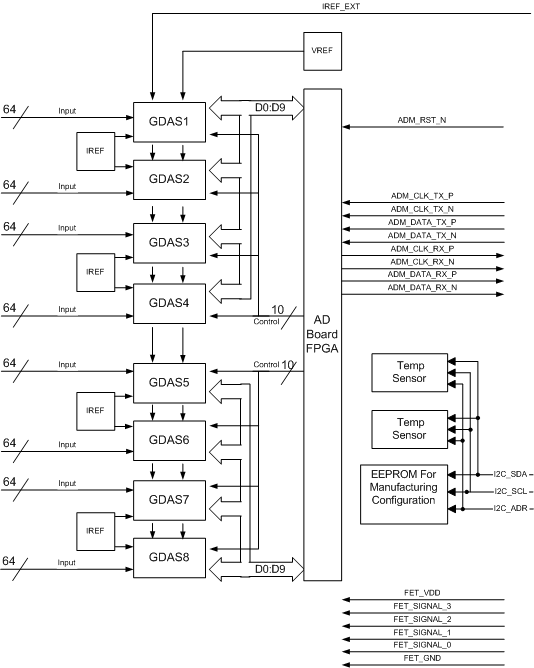

Operating Documentation
Direction 5193575-800, Rev# 5
LightSpeed 7.X Service Information - Adv
Operating Documentation |
The Sherlock detector is different from all previous detectors. Previous detectors had the detector modules assembled in detector manufacturing and is subsequently handled as one unit in the field. The Sherlock detector has individually replacement detector modules. This means that a detector can effectively be repaired in the field instead of a complete detector replacement.
The Detector is comprised of 57 detector modules with each module attached to one or two A/D boards through a flex connection. For 64 slice, each module is attached to two A/D boards. For 32 slice, each module is attached to a single A/D board. The detector module, A/D board(s) and digital output cable are a single FRU.
X, Y & Z Axis: The X-Axis is the axis perpendicular to the path of x-rays. On the detector, this translates to the axis that follows the length of the detector along the collimator rails. The Z-Axis is the axis parallel to the patient. On the detector this translates to the axis along the width of the detector between the collimator rails. The Y-Axis is the axis formed by the path of the x-rays. On the detector this translates to the axis into the depth of the scintillator.
Illustration 1: Orientation Illustration

Field Replaceable Detector Module (FRDM): Refers to the Detector Diode, A/D board Sandwich Assembly and Digital cable.
Pack-Diode Assembly: Refers to the Diode-Assembly plus the coupled Scintillator Pack.
A/D Sandwich Assembly: Refers to the assembly of two A/D Boards along with Heat Sinks, Light-seal Hardware, Card Retention Hardware and Digital Cable Assembly.
Digital Detector: Refers to the Assembly that includes the Collimator, Digital Array of 57 FRDMs and A/D Card Cage Mechanical Assembly. Functionally it includes all components from the Detector Collimator through the A/D and the Digital Cable. (Up to but not including the DAS Backplane). In this document this will also be referred to as the Sherlock Detector.
Detector-DAS Assembly: Refers to the complete assembly of the Digital Detector with the digital DAS.
The smallest element of the x-ray detector matrix is a detector pixel. The detector pixel as presented to the AD Board is a zero-biased photodiode whose current output (photo-current Ip) is proportional to the incident X-ray flux.
For 32 slice systems, Some applications will include the connection of multiple pixels in parallel to a single GDAS preamplifier channel. The connection means shall be a FET switch array, that is in the detector front-end module or on AD Board. FET switching is only applicable on the 32 slice system. The FET array will connect pixels in the ”Z” direction, which is the direction normally parallel to the longitudinal axis of the patient. Up to 2 pixels may be connected in this manner. The output of such interconnected pixels shall hereafter be referred to as a detector cell. If an application includes pixels, which are not connected to an output cell or preamplifier input, such pixels will be connected to electrical ground by the FET array. The disconnected pixels will present a FET off impedance to the GDAS ASIC on a 32 slice system.
For 64 slice systems, the combination of detector pixels (cells) occurs in the post data processing. All data is collected from the detector modules and sent back to the host. The host reconstruction software then manipulates the data to combine detector cells as appropriate for the requested scan.
The AD Board processes low current, analog data from 512 Detector outputs and converts these inputs into One digital serial streams.
Each of the 512 x-ray detector electrical current output signals to the converter board are termed a “DAS channel”
Illustration 2 is a block diagram of AD Board. 512 X-ray detector signals are going to 8 GDAS ASICs. 100uA internal current references and 2.5V voltage reference are on the AD Board. 1uA External current reference for drift tracking is provided by the DCB. GDAS ASIC control signals are provided by the Digital Interface Board (DIFB). 2 temperature sensors and EEPROM for AD Board identification with I2C bus are on each AD Board.
Illustration 2: AD board Block Diagram

The A/D Board is used for both 64 slice system and also 32 slice systems. The A/D Board accommodates both a frontlit and backlit diode configurations. The 64 slice system uses a backlit diode and the 32 slice system uses a frontlit diode.
For 64 slice configuration with 64 slice Backlit Photo Diode, Two A/D Boards are used for One detector module which is 64 row and 16 channel cells. One module consists two 32 row and 16 channel cells photo diodes which are tiled Z-axis direction. The A/D boards are referenced as an “A” and “B” A/D board and are physically combined into a 2 board sandwich. The “A” side A/D board handles for rows 1A to 32A of the detector module while the “B” side A/D board handles rows 1B to 32B.
For 32 slice configuration with 32 slice Frontlit Photo Diode, One AD Board is used for one detector module which is 32 row and 16 channel. One module consists 48 row and 16 channel cells photo diode. The FET Switch is located next to the photo diode. This FET switch is controlled by the DCB. The control signals, power and ground are provided by the DCB through the AD Board. In this configuration only the “A” side A/D board exists. The “B” side A/D board is a blank card in this system.
The AD Board is externally controlled using the following signals
ADM_RST_N (AD Board Reset) is a Low level active signal that is activated by the IFB (Interface Board) to reset GDAS ASIC. It is a semi-hard reset for the AD Board.
ADM_CLK_TX (Differential, input Signal Pair) is 100MHz synchronized clock with DAS_CLK, which is transferred from IFB to AD Board.
ADM_DATA_TX (Differential, input Signal Pair) is GDAS ASIC control, 100MHz synchronized data with ADM_CLK_TX, which is transferred from IFB to AD Board.
ADM_CLK_RX (Differential, input Signal Pair) is 100MHz clock with which is transferred from AD Board to IFB.
ADM_DATA_RX (Differential, input Signal Pair) is GDAS acquired, 100MHz synchronized data with ADM_CLK_RX, which is transferred from AD Board to IFB.
IREF_EXT (Time Shared Tracker Current) This 1 micro amp. Current reference signal is supplied from the DCB to the current generator of the IC as input and generates the fold, injection, and amplifier-bias currents needed by all channels on the IC. While fold currents remove charge from a stage, injection currents add charge.
I2C_SCL (I2C bus clock) is a clock input signal for 2-wire serial communication port for temperature sensors and EEPROM.
I2C_SDA (I2C bus data, bi-directional signal) is a data input/output signal for 2-wire serial communication port for temperature sensors and EEPROM, which is an open drain.
I2C_ADRS2, 1 (I2C bus address) are a data input signal for 2-wire serial communication port for temperature sensors and EEPROM, which is an open drain.
FET_VDD, FET_GND, FET_3-0 (FET power and signals) are used to control FET switch on 32slice frontlit diode detector.
The A/D Board provides the capability to receive GDAS ASIC control data from the IFB and transmit GDAS ASIC acquired data to the IFB.
The A/D Board does not require any external Voltage Reference(s). The A/D Board generates its own +2.5V voltage references for the GDAS ASIC from the power supply input voltages.
The A/D Board generates its own 100 micro amp. current references. The A/D Board requires a 1 micro amp. external current reference from the DCB.
The A/D Board is designed to use the following power supply voltages.
Table 1: AD Board Power levels
| Characteristics | +2.5V A | -2.5V A | +2.5V D | +3.3V A | +3.3V D | +1.5V FPGA | +2.5V FPGA |
| Voltage Tolerance | +/- 5% | +/- 5% | +/- 5% | +/- 5% | +/- 5% | +/- 5% | +/- 5% |
| Max pk-pk noise and ripple | 2.5 mV | 2.5 mV | 2.5 mV | 2.5 mV | 2.5 mV | 2.5 mV | 2.5 mV |
| Max RMS noise and ripple | 20 uV | 20 uV | 50 uV | 50 uV | 50 uV | 50 uV | 50 uV |
The -2.5V analog is brought up before the +2.5V analog, +2.5V digital, and +3.3V analog voltages. The maximum required elapsed time from power-on to full to specified detector performance is 1 hour. Time to meet full specified detector performance is be computed on the basis of two minutes warm-up per minute since power was last on or 1 hour, whichever is less. However, under no conditions where the power has been temporarily turned off, shall the required warm-up to meet full performance specification be less than 45 minutes.
The A/D boards have no jumpers or LED's. The system can not be run with the Air plenum off as there is significant heat generated by the A/D boards that will cause an over temperature condition very quickly. Test points are available on the board but are for engineering use. Do not power on the DAS/Detector with the air plenum removed.
The Common Fan Control (CFC) and Detector Heater Control (DHC) board theory can be found in the Gantry Thermal Theory document.